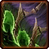
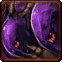

- Stats
- Abilities/Upgrades
- Strategy
- Lore
- Related
Armor: 0
 0/0 0 per second
0/0 0 per secondDamage: 0
Attacks: 0
Cooldown: 0
Targets: None
Attack Range: 0
1.8749 with  Pneumatized Carapace
Speed on Creep: N/A
Acceleration: 1.0625
Collision Radius: 1
Requirements: Level 2 requires Lair, level 3 requires Hive
| Level | Level 1 | Level 2 | Level 3 |
| Minerals |  100 100 | 175 | 250 |
| Vespene Gas |  100 100 | 175 | 250 |
| Time |  160 160 | 190 | 220 |
| Damage Bonus | 0 | 0 | 0 |
| Total Damage | 0 | 0 | 0 |
100Vespene Cost:
0Supply:
 0
0Produced From: Larva Build Time:
25Requirements: Larva
Supply Provided:
8Unit Type: Armored, Biological, Air
Requirements: Level 2 requires Lair, level 3 requires Hive
| Level |  Level 1 Level 1 |  Level 2 Level 2 |  Level 3 Level 3 |
| Minerals | 150 | 225 | 300 |
| Vespene Gas | 150 | 225 | 300 |
| Time | 160 | 190 | 220 |
| Armor Bonus | +1 | +2 | +3 |
| Total Armor | 1 | 2 | 3 |
| Icon | Minerals | Vespene Gas | Research Time | Researched At |
| 0 | 0 | 0 | Unlocked with Lair |
Duration:
15Affected Area: 2x2
Information: Once a Lair has been built, this ability is unlocked for all Overlords.
This allows the Overlords to spread Creep below them in a 2x2 area.
It takes ~30 seconds for the full area to recede once the Overlord stops casting.
This ability is channeled, and requires the overlord to be stationary to work.
| Icon | Minerals | Vespene Gas | Research Time | Researched At |
| 0 | 0 | 0 | Unlocked with Lair |
Minerals:
50Vespene Gas:
50Duration:
17Information: Once a Lair has been built, this ability is unlocked for all Overlords.
This puts the Overlord into a cocoon for 17 seconds while it morphs into an Overseer. Overseers have detection, among other abilities.
Overlords lose the ability to transport and spread creep when turned into an Overseer.
Overseers are healed to full health when they come out of their coccon.
| Icon | Minerals | Vespene Gas | Research Time | Researched At |
| 100 | 100 | 60 | Lair |
Information: This research boosts the speed of all Overlords to 1.88 from 0.586 , and Overseers to 2.75 from 1.875.
You need a Lair to purchase Pneumatized Carapace, but it can be researched at any Zerg production structure (Hatchery, Lair, or Hive).
| Icon | Minerals | Vespene Gas | Research Time | Researched At |
|  | 200 | 200 | 130 | Lair |
Information: This research gives Overlords the ability to be a transport and load/unload units.
You need a Lair to purchase Ventral Sacs, but it can be researched at any Zerg production structure (Hatchery, Lair, or Hive).
| Icon | Minerals | Vespene Gas | Research Time | Researched At |
| 0 | 0 | 0 | Comes with Ventral Sacs |
Information: This allows the unit with this ability to load or unload units into it. The Overlord has a maximum capcity of 8 unit size. Not 8 units, but 8 unit size.
If you have any suggestions for more strategies, go ahead and post on the forums 'here'!
+1 Weapons vs Zerglings
When Zealots have a +1 weapon advantage versus Zerglings, they will kill Zerglings in two attacks instead of three. This makes Zealots very effecient against Zerglings until the zerg catches up in armor upgrades.
Because of this, there are a handful of timing attack that take advantage of the effecient +1 weapon zealots, forcing the zerg to make spines, roaches, or some other unit than zerglings unless the zerg wants to trade inefficiently.
+1 Weapons vs Zerglings
Sum text about how gosu this is
+1 Weapons vs Zerglings
Sum text about how gosu this is
- Overview
Overlords were evolved from the Gargantis proximae, a species of giant space-faring and semi-intelligent creatures. The Overmind ended up noticing the Xel'Naga hovering in their ships above itself, and needed a way to reach them. Once the Gargantis proximae were passing by in space, the Overmind reached out to them and called them closer to the planet. When they were close enough the Overmind attacked and captured them.
Once assimilated they were used to help cerebrates control and coordinate their broods and scout using their enhanced senses. Through the correct growth stimuli, advanced strains may carry other zerg within hollows in their hides. The Overmind eventually used the new "Overlords" to reach the Xel'Naga above itself, and used them to kill the Xel'Naga.
Despite resembling the Portuguese man-o-war of Earth, they are fairly docile creatures that in addition to their leadership duties, tend to young larvae, act as scouts monitor the process of drones through a type of instinctive telepathy and transport other zerg across the depths of space by carrying them within their shelled bodies. The importance of their function is underlined by the sheer number of overlords found accompanying zerg forces.
Overlords fly using helium-filled gas sacs combined with a weak telekinetic psi-ability for lift and motive power. They are protected by an exoskeleton, strong enough to resist a lightning strike. By the Second Great War, overlords were capable of disgorging creep to prepare the way for zerg conquests, and had gained the ability to metamorphose into overseers, a genetic alteration of the overlord with advanced senses and the ability to spawn changelings.
After Kerrigan's defeat at Char, some overlords attempted to form pockets of organized zerg in the same manner as brood mothers. However, this was a token effort, and most zerg regressed to a feral state.
Source Information
Text information from the Starcraft Wiki.
Photo 1 created by Saejin Oh. Copyright: UDON Entertainment.
Photo 2 created by Samwise Didier. Copyright: Blizzard Entertainment.
| Zerg |
| Units |
| Hatchery Tech | Drone | Overlord | Queen | Zergling | Baneling | Roach |
| Lair Tech | Overseer | Hydralisk | Mutalisk | Corruptor | Infestor |
| Hive Tech | Ultralisk | Broodlord |
| Spawned Units | Larva | Changeling | Infested Terran | Broodling |
| Structures |
| Hatchery Buildings | Extractor | Spawning Pool | Baneling Nest | Roach Warren | Evolution Chamber |
| Lair Buildings | Hydralisk Den | Spire | Infestation Pit | Nydus Network |
| Hive Buildings | Ultralisk Cavern | Greater Spire |
| Defensive Buildings | Spine Crawler | Spore Crawler | Creep Tumor | Nydus Worm |